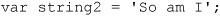
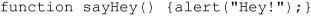
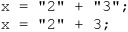
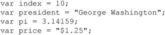

The basic types that JavaScript supports include numbers, strings, and Booleans. More complex types such as objects, arrays, and functions are also part of the language. This chapter covers in detail the basic data types and their usage. Functions and composite types, such as objects, are also briefly introduced, but a complete exposition of their capabilities is reserved for Chapters 5 and 6.
A variable can be thought of as a container that holds data. It’s called a “variable” because the data it contains—its value —varies. For example, you might place the total price of items a customer is buying in a variable and then add tax to this amount, storing the result back in the variable.
The type of a variable describes the nature of the data stored. For example, the type of a variable holding the value 3.14 would be number, while the type of a variable holding a sentence would be string. Note that “string” is programming language lingo for a sequence of characters—in other words, some text.
Since you need to have some way to refer to variables, each one is given an identifier, a name that refers to the container and allows the script to access and manipulate the data it contains. Not surprisingly, a variable’s identifier is often referred to as its name. When scripts are run, the JavaScript interpreter (the facility within the browser that executes JavaScript) needs to allocate space to store a variable’s value. Declaring a variable is the process of telling the interpreter to get ready to associate data with the name.
In JavaScript, variables are declared using the var keyword with the name of the variable you wish to declare. For example, you might write
You can now store data in the variable known by the identifier firstName. Presumably, given the context of the name, you’d be storing a string here. We could then assign a value like “Thomas” to the variable. We call the string “Thomas” a literal, which describes any data appearing directly in the source code. The complete example is now
The illustration here demonstrates all the terms used so far together.
Although it is good programming practice to declare variables before use, JavaScript allows the implicit declaration of variables by using them on the left-hand side of an assignment. In other words, when the interpreter sees a variable being assigned data it will create that variable automatically even if it hasn’t been previously declared using the var keyword. For example, you might just assign a variable like so:
and, whoosh, it springs into existence.
Unfortunately, this feature of JavaScript can lead to less-readable code as well as subtle, hard-to-find errors involving variable scope, a topic we’ll discuss later in the chapter. Unless you’re writing a very simple script (less than a dozen lines), always declare your variables explicitly.
Many high-level languages, including C and Java, are strongly typed. That is, a variable must be declared before it is used, and its type must be included in its declaration. Once a variable is declared, its type cannot change. At the other end of the spectrum are untyped languages such as Lisp. Lisp supports only two primitive data types: atoms and lists. It does not draw any distinction between strings, integers, functions, and other data types. As a weakly typed language, JavaScript falls somewhere in between these two extremes. Every variable and literal has a type, but data types are not explicitly declared. For example, we might define a variable to hold our favorite number:

Notice we don’t indicate what the type of the variable is, though the name kind of gives away that it is a number, and in this case our favorite one, which is 3, so we assign it like so:
Now, given that we aren’t indicating type, it is possible to assign the variable to be the string value “San Diego”:
Logically, the example doesn’t make much sense, and it is certainly possible to continue on and assign it to a Boolean:
or even some complex type like an array:
Weak typing would seem to unleash our burden of thinking about type, but really it has its own peculiar concerns. First, when the variable favNumber is declared, it is empty. In fact, its data type is actually the type undefined. Then we assign it to the number 3, so its data type is Number. Next we reassign it to the string “San Diego”, so the variable’s type is now String. Later it is set to a Boolean and then even the composite type Array. As you can see, types are inferred from content, and a variable automatically takes on the type of the data it contains. In some sense, the variable is simply a name that references some arbitrary type of data, and we are free to change what the name references at any time and use the value as we like.
As a comparison to JavaScript’s weak typing, let’s observe what might happen in a more strongly typed language such as C, Java, or Pascal. With such a language, you might define the type allowed in favNumber explicitly, like so:
Given this example, an assignment such as
would be perfectly valid. But if you assigned some nonnumeric type to the variable, such as this:
it would cause an error or warning to occur. Weak typing would, of course, let things proceed without warning.
At first blush, weak typing provides simplicity and flexibility since programmers don’t have to worry about types, but it does so at the expense of runtime errors and security issues. We’ll see many issues with weak typing throughout both the chapter and the book, and we will discuss the security issues in Chapter 18. For now, introducing the general concept is enough. Let’s begin to look at each of the types in turn, which will allow us to revisit the topic with a bit more depth.
JavaScript supports five primitive data types: number, string, Boolean, undefined, and null. These types are referred to as primitive types because they are the basic building blocks from which more complex types can be built.
Unlike languages such as C and Java, the number type in JavaScript includes both integer and floating-point values. All numbers are represented in IEEE 754-1985 double-precision floating-point format. This representation permits exact representation of integers in the range –253 to 253, and floating-point magnitudes as large as ±1.7976×10308 and as small as ±2.2250×10-308. It is helpful to know these limits; for example, when you exceed the integer limit you will lose precision as the number is converted into a float. If you exceed the float limit, the number will take on the value of Infinity since it exceeds the language’s representation ability.
Numeric literals in JavaScript can be written in a wide variety of ways, including scientific notation. When using scientific notation, the exponent is specified with the letter e (which is not case-sensitive).
Formally, decimal literals have one of the following three forms (parentheses indicate optional components):
DecimalDigits.(DecimalDigits)(Exponent)
.DecimalDigits(Exponent)
DecimalDigits(Exponent)
In plain English, this means that all of the following are valid ways to specify numbers:
Note that you should not include leading zeros in your integers because JavaScript also allows numeric literals to be specified in bases other than ten (decimal), and a leading zero indicates to JavaScript that the literal is in a radix other than ten.
Programmers often find it convenient to write numbers in hexadecimal (base-16) notation, particularly when working with memory or bitwise operations. It is easier for most people to convert binary to hex than binary to decimal. If this doesn’t make any sense to you, don’t fret; if you don’t already know hex, it is not necessary to learn for the sake of learning JavaScript.
JavaScript’s hex syntax should be familiar to readers with previous programming experience: a leading zero, followed by the letter x (not case-sensitive), followed by one or more hexadecimal digits. Hexadecimal digits are the numbers zero through nine and the letters A through F (not case-sensitive), which represent the values zero through fifteen. The following are examples of legal hexadecimal values:
You cannot use an exponent when using hexadecimal notation (or octal notation). Interestingly, you will not see hex directly in JavaScript once it is set. Consider this simple example:
NOTE While hex may seem to be of limited use in JavaScript used on the Web, consider that color values in HTML and CSS are often set in hex.
Most JavaScript implementations allow octal (base-8) numeric literals. Octal literals begin with a leading zero, and octal digits are the numbers zero through seven. The following are all valid octal literals:
Like hex values, while you may set a value as octal when you use or display it, the value will revert to the traditional decimal style:

NOTE ECMAScript Edition 5 removes octal literals from the specification when strict mode is used, though browsers will likely continue to support them, particularly when strict enforcement is not indicated.
Numeric data can take on several special values. When a numeric expression or variable exceeds the maximum positive value that can be represented, it takes on the special value Infinity. Likewise, when an expression or variable becomes less than the lowest negative value that can be represented, it takes on the value –Infinity. These values are sticky in the sense that when one is used in an expression with other normal values or itself, it causes the entire expression to evaluate to its value. For example, Infinity minus 100 is still Infinity; it does not become a number that can be represented. All Infinity values compare equal to each other. Similarly, all –Infinity values compare equal.
Although an easier way to get an Infinity value is to divide one by zero, the following code demonstrates what happens when you increment the maximum positive value that can be represented:
This code assigns the maximum positive representation to x, increments its least significant digit, and then shows the user the resulting value x. The result is
To detect if an infinite value has been reached, use the isFinite() method found on the Global object. For example:
The other important special value is NaN, which means “not a number.” Numeric data takes on this value when it is the result of an inappropriate operation. Common examples of operations that result in NaN are dividing zero by zero, taking the sine of Infinity, and attempting to add or subtract Infinity to –Infinity. The NaN value is also sticky, but unlike the infinite values it never compares equal to anything. Because of this, you must use the isNaN() method or compare the value to itself to determine if a value is NaN. The isNaN() method returns a Boolean indicating whether the value is NaN. This method is so important that it is a property of the Global object, so it can be called directly in your scripts. Comparing the value to itself will indicate whether the value is NaN because it is the only value that does not compare equal to itself!
The following example illustrates the use of both techniques:
Table 3-1 summarizes these special numeric values.
Table 3-1 Summary of Special Numeric Data Values
You can reach all of these special values as a result of a division by zero. For example, division of a positive number by zero (5/0) results in Infinity, division of a negative number by zero (–3/0) results in -Infinity, and division of zero by zero (0/0) returns NaN.
JavaScript also provides an object representation of numbers. You can use a new operator to create a number like so:
When you run typeof on this variable, it will indicate itself as an object so it will not compare strictly using (===) to primitive numbers. There is little practical value and likely more trouble employing this number creation method. We’ll see some other, more appropriate uses later in the chapter, starting here with the constants found on the Number object.
There are beneficial uses of the Number object, particularly to access special numerical values. These properties are shown in Table 3-2, and the following example illustrates some expressions with them:
Table 3-2 Properties of the Number Object Relevant to Special Numeric Values
Related to the Number object, JavaScript supports a Math object that has useful properties and methods. A complete discussion of this object can be found in Chapter 7.
The fact that numbers in JavaScript are represented as 64-bit floating-point numbers has some complicated implications and subtle pitfalls. If you’re working with integers, keep in mind that only integers in the range –253 to 253 can be represented exactly. As soon as your value (or an intermediate value in an expression) falls outside of this range, its numeric value becomes an inexact approximation. This can lead to some surprising behavior:
Things get really messy if you work with floating-point numbers. Many such values cannot be represented exactly, so you might notice (or worse, not notice) seemingly “wrong” answers for even simple computations. For example, consider the following code snippet:
One would expect x to contain the value 1.6665. However, the actual result is shown here:
This example illustrates the precision challenges with floats, considering that this value, of course, will not compare equal to 1.6665!
There are a number of methods that may assist us in handling floating-point values, including various Math methods such as round(), ceil(), and floor(), as well as numeric conversion methods derived from Number such as toExponential(), toFixed(), and toPrecision(). These methods are covered in Chapter 7.
A basic rule of thumb is to never directly compare fractional values for equality, and to use rounding to convert numbers into a predetermined number of significant figures. The loss of precision inherent in floating-point arithmetic can be a very serious issue for applications that need to calculate precise values. As a result, it probably is not a good idea to rely on floating-point arithmetic for important computations unless you have a firm understanding of the issues involved. The topic is far outside the scope of this book, but interested readers can find tutorials on floating-point arithmetic online, and more in-depth discussion in books on numerical analysis or mathematical programming.
A string is simply text. In JavaScript, a string is a sequence of characters surrounded by single or double quotes. For example:
defines a string value to be stored in string1, as does the code fragment here:

Unlike some other programming languages, JavaScript draws no distinction between single characters and strings of characters. The value of taking two forms of strings is that you can easily intermix quoted JavaScript into quoted HTML attributes like so:
Similarly, the flexibility allows us to mix quotes inside of other strings, as shown here:
When string delimiting quotes of the same types are mixed, we have to escape them with a backslash.
We’ll explore these special aspects of strings a bit more later, but for now let’s continue the introduction.
Strings are associated with a String object. This means we can create strings using the new operator, like so:
When you create a string this way, data will identify itself as an object now, rather than as a primitive type when you use typeof. There is simply no need to do this, as even when using the primitive type we still retain all the String object’s methods for manipulation and examination. For example, you can extract characters from strings using the charAt() method:
Because the characters in strings are enumerated starting with zero (the first position is position zero), this code fragment extracts the third character from the string (o) and assigns it to the variable thirdLetter. You can also determine the length of a string using the length() method:
These are just a couple of the numerous methods available with strings that are fully discussed in Chapter 7. However, we do need to cover a few important string details now before moving on to other primitive types.
Any alphabetic, numeric, or punctuation characters can be placed in a string, but there are some natural limitations. For instance, the newline character is the character that causes output to move down one line on your display. Typing this directly into a string using the enter key would result in a string literal like this:
which is a syntax error since the two separate lines appear as two different statements to JavaScript, particularly when semicolons are omitted.
Because of the problem with special characters such as returns, quotes, and so on, JavaScript, like most other programming languages, makes use of escape codes. An escape code (also called an escape sequence) is a small bit of text preceded by a backslash (\) that has special meaning. Escape codes let you include special characters without typing them directly into your string. For example, the escape code for the newline character is \n. Using this escape code, we can now correctly define the string literal we previously saw:
This example also illuminates an important feature of escape codes: they are interpreted correctly even when found flush with other characters ( . and T in this example).
A list of supported escape codes in JavaScript is shown in Table 3-3.
Table 3-3 Escape Codes Allow You to Include Special Characters in Strings
Close examination of the table of escape codes reveals that JavaScript supports two different character sets. ECMA-262 mandates support for Unicode, and modern JavaScript implementations support it. Unfortunately, many western developers are not really familiar with character sets, so we present a short discussion here. The Latin character set uses one byte for each character and is therefore a set of 256 possible characters. The Unicode character set has a total of 65,536 characters because each character occupies 2 bytes. Therefore, Unicode includes nearly every printable character in every language on earth. Today, browsers widely support Unicode, but there can be visual differences, particularly with variation of fonts on different systems.
To demonstrate the encodings, the following example uses escape codes to assign the string containing the letter B to variables in three different ways. The only difference between the strings is the character set used to represent the character (that is, they all compare equal):
More information about character sets and Web technologies can be found at www.unicode.org and www.w3.org.
NOTE Because of the multitude of representations of the same characters shown, as well as using x-www-form-urlencoded, some coders will encode JavaScript numerous times to obfuscate what it is. While layered character encoding may be done for legitimate obfuscation purposes, it is also used by some devious developers to hide JavaScript malware.
When it comes to special characters, quotes deserve special attention, and you can see in Table 3-3 that there are escape codes for both single and double quotes in JavaScript. If your string is delimited with double quotes, any double quotes within it must be escaped. Similarly, any single quotes in a string that are delimited with single quotes must be escaped. The reason for this is straightforward: if a quotation mark were not escaped, JavaScript would incorrectly interpret it as the end of the string. The following are examples of validly escaped quotes inside of strings:
The following strings are not valid:
The capability for strings to be delimited with either single or double quotes is very useful when one considers that JavaScript is often found inside HTML attributes such as onclick. These attributes should themselves be quoted, so flexibility with respect to quoting JavaScript allows programmers to avoid the laborious task of escaping lots of quotes. The following HTML form button illustrates the principle:
Using double quotes in the alert() would result in the browser interpreting the first such quote as the end of the onclick attribute value, so we use single quotes. You might consider that the alternative would be to write:
which is rather awkward. However, it won’t work either. The browser’s parser closes the attribute off when it sees a matching double quote, regardless of escaping. The quoting nest level won’t change things. Consider that this example
bombs despite the aim of escaping the quotes. The lesson here is to avoid intermixing JavaScript into HTML when you can, and when you do, watch your quotes!
(X)HTML automatically “collapses” multiple whitespace characters down to one whitespace. So, for example, including multiple consecutive tabs in your HTML shows up as only one space character. In this example, the <pre> tag is used to tell the browser that the text is preformatted and that it should not collapse the white space inside of it. Similarly, we could use the CSS white-space property to modify standard white space handling. Using <pre> allows the tabs in the example to be displayed correctly in the output. The result can be seen in Figure 3-1.
Figure 3-1 Watch out for whitespace handling on output.
ONLINE http://javascriptref.com/3ed/ch3/whitespacestrings.html
Booleans derive their name from George Boole, the 19th century logician who developed the true/false system of logic on which digital circuits would later be based. With this in mind, it should come as no surprise that Booleans take on one of two values: true or false.
Comparison expressions such as x < y evaluate to a Boolean value depending on whether the comparison is true or false. So the condition of a control structure such as if/else is evaluated to a Boolean to determine what code to execute. For example:
increments x by 1 if the comparison x equal to y is true.
You can use Booleans explicitly to the same effect, as in
or
As with the other primitive types, it is possible to define a Boolean value using an object constructor:
Of course, all that is going to do, practically speaking, is make the variable identify itself as an object and not strictly (===) compare properly with primate Booleans. In general, primitive type constructors such as Boolean() are not appropriate, though as we preview here we can use them to explicitly cast a value into the Boolean type:
We’ll explore type conversion in a bit, but for now let’s finish up our tour of primitive types with undefined and null.
The undefined type is used for variables or object properties that either do not exist or have not been assigned a value. The only value an undefined type can have is undefined. For example, declaring a variable without assigning it a value, as shown here:
gives x the undefined type and value:
Accessing a nonexistent object property:
also results in the assignment of undefined to x.
Be careful not to confuse undefined with undeclared. For example, if you try to access an undeclared value like so:
an error will be thrown. Interestingly, though, you can run a typeof operation on the undeclared variable and it will expose it as an undefined value:
The null value indicates an empty value; it is essentially a placeholder that represents “nothing.” The distinction between undefined and null values is tricky. In short, undefined means the value hasn’t been set, whereas null means the value has been set to be empty. There is one further wrinkle to be aware of: the null value is defined as an empty object. Because of this, using the typeof operator on a variable holding null shows its type to be object. In comparison, the type of undefined data is undefined.
While they may appear different using typeof, the two values will compare as equal with a basic compare (==), but when strict comparisons (===) are performed, they are different:
ONLINE http://javascriptref.com/3ed/ch3/undefinednull.html
Objects form the basis for all nonprimitive types in JavaScript. An object is a composite type that can contain primitive and composite types. The main distinction between primitive types and composite types is that primitive types contain only data in the form of a fixed set of values (for example, numbers); objects can contain primitive data as well as code (methods) and other objects. Objects are discussed at length starting in Chapter 6. In this section, we only give a brief introduction to their usage and focus primarily on their characteristics as data types.
An object is a collection that can contain primitive or composite data, including functions and other objects. The data members of an object are called properties, and member functions are known as methods. Some readers may prefer to think of properties as the characteristics of the object and the things the object does as its methods, but the meaning is the same.
Properties are accessed by placing a period and the property name immediately following the object name. For instance, the user-agent string of a browser is stored in the userAgent property of the Navigator object. One way of accessing this property is
the result of which in Internet Explorer 8 is similar to the following:
Methods of objects are accessed in the same way but with trailing parentheses immediately following the method name. These parentheses indicate to the interpreter that the property is a method that you want to invoke. The Window object has a method named close, which closes the current browser window:
If the method takes arguments, the arguments are included in the parentheses. We’ve seen a common example of this usage with the write method of the Document object:
JavaScript provides many powerful objects for developers to use. These include browser-specific objects such as Window, which contains information and methods related to the browser window. For example, as we mentioned previously, window.open() could be used to create a window. Objects such as Document contain more objects that map to the various features and tags of the document in the window. For instance, to see the last modification date of the document, we could reference the document.lastModified property. Also available are numerous objects defined in the JavaScript language that simplify common tasks. Examples of such objects are Date, Math, and RegExp. Finally, each data type in JavaScript has a corresponding object. So there are String, Number, Boolean, Array, and even Object objects. These objects provide the functionality commonly used to carry out data manipulation tasks for the given type. For example, we already saw that the String object provides methods like charAt() to find characters at a particular position in a string. There are so many different objects to cover that the majority of the book is spent discussing the various built-in and generated objects. Of course, if you want objects of your own, you can create those too.
User-defined objects are created in one of two ways. First, a simple object literally defined by { } could be used. Here we define a blank object:
Next, we might assign properties and methods into the object:
Of course, we may also define this all at once, like so:
Another scheme of object creation would be using the new keyword followed by the name of the object and parentheses. The reason for the parentheses is that objects are created using constructor s, methods that create a fresh instance of an object for you to use. The parentheses tell the interpreter that you want to invoke the constructor method for the given object. We’ve seen such syntax already. Here we create a brand-new String object:

You can of course define a new generic object in the same manner, like so:
Then we may dynamically add some properties to this object:
If we wanted to make a constructor that was more specific, we might define a function, like so:
which would then allow us to create objects easily like so:

Don’t worry if you are not completely comfortable with the concept of objects from previous experience; it will be explained at greater length in Chapter 6. The important things to understand at this point are the syntax in JavaScript of property access using the dot operator (.), as in myLocation.city, the notation difference between a property and a method, and the fact that you can indeed make your own objects.
An important wrinkle about objects in JavaScript is their fuzzy relationship with arrays, which seems practically like a data type of its own but is not. If you issue a typeof on an array, it will identify as an object, but we need to look closely at it because it is a bit different.
An array such as an object is a collection of other data values but is ordered by a numeric index. To define an array literal, we use [ ] as opposed to the standard { } for objects. To demonstrate:
defines an empty array, whereas
defines a small array of strings. Alternatively, we could define these same arrays using standard object initialization syntax using the Array constructor, like so:
There is no limit to the type of values that may be found in arrays. For example:
shows an array containing a variety of primitive types as well as a nested array and object.
Arrays are generally indexed numerically starting with 0, so given the kids array, kids[0] would be “Graham”, kids[1] would be “Olivia”, and kids[2] would be “Desmond”. A reference to an index out of scope, say kids[20], returns a value of undefined. Values may be read as well as set using this syntax, as shown here:
Where we start to see some clear overlap with objects is when we forgo the automatic numeric index scheme of arrays and use string associations. Here, for example, we define the kids array again but use strings to index the various values:
Now, to access the values, we would use the same dereference as before, but with a string value rather than a number:
Interestingly, we can also use object style because we aren’t really an ordered collection anymore:

The interchangeability of arrays and objects is not complete, but it is quite close. Consider, for example, our hello world code:
Oddly, though, it can be written as:
At this point, just remember that arrays and objects really aren’t that different. In fact, the main differences are that arrays are more focused on order than objects and we use different notation to access arrays. We’ll talk quite a bit more about arrays in Chapter 7.
A function is another special type of JavaScript object, one that contains executable code. Here we do a literal style function definition:

However, it can be treated as just another type and assigned as a value:
As it really is an object, we can use the function constructor with a new operator as well:
No matter the creation method, a function should identify itself as a function when the typeof operator is used. Further, regardless of creation, the invocation of the function is triggered by following the function name with parentheses:
Functions can take arguments (or parameters), which are pieces of data that are passed to the function when it is invoked. Arguments are given as a comma-separated list of values between the parentheses of the function call. The following function call passes two arguments, a string and a number:
The call passes myFunction two things, a string and a number, that the function will use to perform its task. You should notice the similarity with the method invocation here:
In this case, the write method of the Document object is invoked to output a string to the current browser window. Methods and functions are indeed closely related. A simple way to think about it would be that a function appears not to be associated with an object (though it is), whereas a method is a function that is obviously attached to an object.
Interestingly, once you get down into functions and objects, the world gets quite complicated and you’ll discover that functions are indeed first-class data types in JavaScript. This means that functions are treated just like any other nonprimitive type. They can be assigned to variables, passed to other functions, and created or destroyed dynamically. We’ll talk more about what all this means in Chapters 5 and 6.
If you’re curious about the type of data you have, use the typeof operator to examine it. Applied to a variable or literal, it returns a string indicating the type of its argument. The list of values returned by typeof is given in Table 3-4 with a special callout to the null result.
Table 3-4 The String typeof Returns when Called on Data of Different Types
NOTE Running a typeof on a regular expression will return a different value depending on implementation. We discuss this quirk in Chapter 8, which covers the topic of JavaScript RegExps in depth.
While arrays aren’t that different than objects, we may treat them as such, and detecting for them may be important. Unfortunately, typeof won’t be much help. Given that
the typeof operator provides no indication that we are actually using an Array. Traditionally, to detect an array specifically you may then opt to try something like:
which will specifically evaluate as true when the variable is an array.
This will work fine in most situations save scripting in a multiwindow or frame environment where this instanceof check will vary because of sharing across frames/ windows. In this case, ECMAScript 5 offers up Array.isArrray(), which should allow us to check for this specific type:
Unfortunately, it isn’t implemented in many browsers, so you may be forced to add a monkey patch like this:
which will make array detection a bit more consistent. Fortunately, such a feature is commonly found in JavaScript libraries.
Automatic type conversion is one of the most powerful features of JavaScript, as well as the most dangerous for the sloppy programmer. Type conversion is the act of converting data of one type into a different type. It occurs automatically in JavaScript when you change the type of data stored in a variable:
The type of x changes from string to number. Besides the automatic conversion inherent in JavaScript, it is also possible for programmers to force the conversion using methods such as toString() or parseInt().
While at first this process may seem straightforward enough, the problem with type conversion is that it often occurs in less obvious ways, such as when you operate on data with dissimilar types. Consider this code:
This example subtracts a number from a string, which should seem very odd at first glance. Yet JavaScript knows that subtraction requires two numbers, so it converts the string “10” into the number 10, performs the subtraction, and stores the number 8 in x.
Of course, in many cases it might not be so obvious due to data and nonobvious conversions. Here, for example, the result
is NaN because the “false” conversion to number conversion results in NaN, which is toxic to the other values. In the case of overloaded operators, even apparently obvious conversions may not work as expected; for example, here the result is the string “102” because the + operator acts as a string concatenation in the presence of strings rather than performing addition:
Whether it is obvious or not, the reality is that automatic type conversion happens all over the place in JavaScript any time that data is not of the type that might be required for some task. For example, consider here a very simple example where we alert the value of the variable x, which is a number:
In this simple example, type conversion occurs because the alert() method takes only strings, so x was converted automatically from 3 to “3”.
Similarly, any time we are using a flow control statement, we will see values cast into Booleans. This means that given a statement such as this:

the interpreter must somehow convert the given object property to a Boolean in order to determine if the body of the if statement should be executed. In this case, we see a technique called object detection in action. If the document.all value is defined, some code is executed; if instead it is undefined, nothing happens.
The important question is this: what rules does the interpreter use to carry out these conversions?
The type conversion rules for primitive types are given in Tables 3-5, 3-6, and 3-7. You can use these tables to answer questions such as what happens in this example:
Table 3-5 Result of Conversion to a Boolean
Table 3-6 Result of Converting to a Number
Table 3-7 Result of Converting to a String
Since every string except the empty string (““) converts to the Boolean value of true, the conditional is executed and the user is shown the alert.
These type conversion rules mean that comparisons such as
are true, but sometimes you don’t want type conversion to be applied when checking equality, so JavaScript provides the strict equality operator (===). This operator evaluates to true only if its two operands are equal and they have the same type. So, for example, the following comparisons would be false:
How the JavaScript interpreter determines the type required for most operators is fairly natural and isn’t required knowledge for most developers. For example, when performing arithmetic, types are converted into numbers and then computations are performed. One important exception we have previewed already is when the + operator is employed.
The + operator is an overloaded operator and has two functions in JavaScript. It performs addition on numbers but also serves as the concatenation operator for strings. Because string concatenation has precedence over numeric addition, in the absence of parentheses a + will be interpreted as string concatenation if any of the operands are strings. For example, both of these statements:

result in the assignment of the string “23” to x. The numeric 3 in the second statement is automatically converted to a string before concatenation is applied.
We have demonstrated that there is an object corresponding to each primitive type. These objects provide useful methods for manipulating primitive data. For example, the String object provides a method for converting a string to lowercase: toLowerCase(). You can invoke this method on a String object:
The interesting aspect of JavaScript is that you can also invoke it on primitive string data:

as well as on literals:
The key insight is that JavaScript automatically converts the primitive data into its corresponding object when necessary. In the preceding examples, the interpreter knew that the toLowerCase method requires a String object, so it automatically and temporarily converted the primitive string into the object in order to invoke the method.
The reality of most programming tasks is that performing type conversion manually is probably better than trusting the interpreter to do it for you. This is definitely the case when processing user input. User input acquired through the use of dialog boxes and (X)HTML forms usually comes in strings. It is often necessary to explicitly convert such data between string and number types to prevent operators such as + from carrying out the wrong operation (for example, concatenation instead of addition, or vice versa). JavaScript provides several tools for carrying out explicit type conversion. These are summarized in Table 3-8.
Table 3-8 Explicit Type Conversion Methods
NOTE ECMAScript Edition 5 in strict mode no longer supports octal values and thus parseInt() should not treat strings starting with 0 as octal, though it will treat a 0x prefixed string as hex. To be safe, you may want to always set a radix value.
Because variables are one of the most important aspects of any programming language, awareness of the implications of variable declaration and reference is key to writing clear, well-behaved code. Choosing good names for variables is important, as is understanding how to tell exactly which variable a name refers to.
An identifier is a name by which a variable or function is known. In JavaScript, any combination of letters, digits, underscores, and dollar signs is allowed to make up an identifier. The only formal restrictions on identifiers are that they must not match any JavaScript reserved words or keywords and that the first character cannot be a digit. Keywords are the words of the JavaScript language, such as return, for, and while. Table 3-9 shows values under ECMAScript Edition 3 and 5 that should be avoided.
Table 3-9 Reserved Words under ECMAScript3
We have intermixed the various reserved words in Table 3-9 for ease, but note that ECMAScript Edition 5 does not have quite the extensive list as Edition 3 and we make no indication of which reserved words are found in which specification, assuming them all to be dangerous to employ. Further, some of these values are enforced only in the strict mode of ECMAScript 5 employed using the “use strict” indicator. Unfortunately, even with all of these reservations in mind, there are other identifier names to avoid, including Window properties and methods, as well as various browser-specific reserved words. The Appendix discusses reserved and dangerous keywords in great depth, showing the subtle variations between versions. For now we are aware of most of the problematic names, so let’s pursue choosing a good name.
One of the most important aspects of writing clear, understandable code is choosing appropriate names for your variables. Unreasonably long or incomprehensible identifiers should be avoided at least in the code you debug.
Although JavaScript allows you to give a variable a cryptic name such as _$0_$, doing so is a bad idea generally unless you are doing so purposefully for code obfuscation. Using dollar signs in your identifiers, as shown here, is highly discouraged; they are intended for use with code generated by mechanical means and were not supported until JavaScript 1.2:
Unfortunately, despite the specification, the $ value is widely used today; in fact, most popular libraries assign $ to a selection function whose use might look like this:
Similarly, using the underscore as an identifier is not the best idea for readability and for collision-reserved values:
Variables internal to the interpreter often begin with two underscores, so using a similar naming convention can cause confusion. However, we do note that many programmers will use a single underscore prefix to suggest a private method or property; for example, we are encouraged not to touch _magicNum and _hiddenMethod, as they are written in a way to indicate their restricted use as being private to the enclosing object:

This use of the underscore is quite legitimate and leads to this most important consideration: A variable’s name should give some information about its purpose or value that is not immediately apparent from its context. For example, the following identifiers probably are not appropriate:
More apropos might be

You should also use appropriate names for composite types. For example:
is a poor choice of identifier for this array. Later in the script it is not at all clear what value anArray[3] might be expected to have. The following is better:
and when it is later used as weekdays[3] gives the reader some idea of what the array contains. Object and functions would, of course, be the same.
If you are concerned with type, it may be useful to prefix variables with a short type indication. For example, s or str for String, n or num for Number, b or bool for Boolean, o or obj for Object, and a or arr for Array. We illustrate a few variables using this scheme here:
Similarly, you may decide to indicate the scope of variables with a prefix. For example, if global variables must be employed, a g prefix might be placed on them:
As stated before, we might use underscores to indicate that something is local or private:
Of course, all of these schemes are more stylistic than enforced in most implementations of JavaScript. However, the next topic concerns not only style but syntax.
Because JavaScript is case-sensitive, weekdays and weekDays refer to two different variables. For this reason, it is not advisable to choose identifiers that closely resemble each other. Similarly, it is not advisable to choose identifiers close to or identical to common objects or properties. Doing so can lead to confusion and even errors.
Capitalization does, however, play an important role in naming conventions. JavaScript programmers are fond of the camel-back style for variable capitalization. With this convention, each word in a variable name has an initial capital except for the first. This should be more readable than strict lowercase:
Occasionally, you will see the use of underscore separators, like so:
While this is fairly readable, it is not nearly as common a style.
NOTE Using dash separators is not allowed in JavaScript. A variable name such as my-age will cause a syntax error.
Traditionally, functions with an initial capital are assumed to be constructors, similar to JavaScript built-ins. For example, here we have a simple constructor and its use:
Finally, items in all capitals are assumed to be constants:
Of course, they really aren’t constant values when defined this way, so the casing is just an indication. JavaScript strictly does not support constants, but today most browsers support them. We’ll explore constants later in the chapter.
JavaScript programmers are fond of using very short variable names, such as x, in order to decrease the number of characters that need to be transferred to the client. This process is generally dubbed minification. So instead of
minified variable names might be
which are much less in byte count and may be somewhat cryptic. Of course, the names are not purposefully confusing. In such cases where we want to obfuscate program meaning, longer similar names might make more sense. For example, here we may use what looks like binary but is simply a letter O prefix of numbers for variable names:
Another possibility would be to use special characters such as an underscore or $ to make confusing names:
Obviously, both obfuscation and minification can deter some from reading your code (though they always can if they are determined). However, these schemes can be problematic if you expect to work on the code directly. Typically, you should use readable identifiers in your development source and then obfuscate and/or minify when you push your code to a production environment. Numerous tools can be found online to assist in minifying or obfuscating your JavaScript.
There are many ways to get in trouble when choosing variable names in JavaScript. First we need to be aware of reserved words such as for, if, while, and so on, as discussed in the Appendix. Next, we need to make sure that we are not creating global variables and, if so, that we are not inadvertently bashing something.
Consider that when you define a global variable it becomes a property of the enclosing Window object, so
actually created
This seems unimportant until you realize that given JavaScript dynamic nature you might accidentally overwrite something. For example:
will cause trouble because we just overwrote the alert() method of Window:
Given that you are not likely to know all the various variables in the Window object, you should be quite careful.
Traditionally, variable names were less likely to collide with Window hosted values or variables from other included scripts if they were prefixed. So, instead of myName, we might use a prefix stem such as JSREF_ in front of all variables, like so:
The global name space unfortunately is still polluted a bit much for our liking, so it is much better to create a wrapper object and then include variables and functions within it:
If we assume that everyone else is not aware of accidental variable overwriting and practice very defensive coding, we’ll likely have far fewer headaches over time.
NOTE ECMAScript Edition 5’s strict mode enabled with “use strict” does assist in accidental bashing of some objects and properties that are marked internally in a certain fashion. This should certainly be enabled; however, it is unlikely to solve all problems, and defensive naming should always be practiced.
As we have seen in numerous examples, variables are declared with the var keyword. Multiple variables can be declared at once by separating them with a comma. Variables may also be initialized with a starting value by including an assignment in the declaration. All of the following are legal variable declarations:
In the final declaration, pi is assigned the undefined value, index is initialized to zero, and weekdays is initialized to a five-element array.
One generally undesirable “feature” of JavaScript is implicit variable declaration. When you use an undeclared variable on the left-hand side of an assignment, the variable is automatically declared. For example, many developers opt for
versus

or
While it would seem that the first choice is easier, the truth of the matter is that implicit declaration is terrible programming style and should never be used. One reason is that readers cannot differentiate an implicit variable declaration from a reference to a variable of the same name in an enclosing scope. Another reason is that implicit declaration creates a global variable even if used inside of a function. Use of implicit declaration leads to sloppy coding style, unintentional variable clobbering, and unclear code—in short, avoid it if you can.
Unfortunately, it isn’t that easy to get away from implicit variable detection. Consider that you defined a variable like so
which later you want to add 10 to. Unfortunately, you might make a slight typo and don’t case the variable quite correctly:
In this situation, the result is a brand-new variable that contains the sum, and now you have a nice runtime error to figure out!
ECMAScript Edition 5 improves the situation of dealing with instantaneous variables in its strict mode. Here we add the strict indication:
and the script quickly identifies the new undeclared variable. It is possible to use the scheme document wide as we did here or restrict the mode to within a particular function, as shown here:
The good news is that strict mode improves JavaScript’s instant declaration problem; the bad news is that widespread adoption of the feature is a ways off. Fortunately, given the way the statement is written as a string literal, it can be used today and enjoyed tomorrow as browsers begin to support it.
The scope of a variable is all parts of a program where it is visible, where being visible means that the variable has been declared and is available for use. A variable that is visible everywhere in the program has global scope. A variable that is visible only in a specific context—a function, for example—has local scope. A context is the set of defined data that make up the execution environment. When the browser starts, it creates the global context in which JavaScript will execute. This context contains the definitions of the features of the JavaScript language (the Array and Math objects, for example) in addition to browser-specific objects such as Navigator.
When a function is invoked, the interpreter creates a new local context for the duration of its execution. All variables declared in the function (including its arguments) exist only within this context. When the function returns, the context is destroyed. So if you wish to preserve a value across multiple function calls, you might need to declare a global variable.
When a variable is referenced in a function, the interpreter first checks the local context for a variable of that name. If the variable has not been declared in the local context, the interpreter checks the enclosing context. If it is not found in the enclosing context, the interpreter repeats the process recursively until either the variable is found or the global context is reached.
It is important to note that the contexts are checked with respect to the source code and not the current call tree. This type of scoping is called static scoping (or lexical scoping). In this way, locally declared variables can hide variables of the same name that are declared in an enclosing context. The following example illustrates variable hiding:
The result is shown in Figure 3-2. The local variable scope has hidden the value of the global variable named scope. Note that omitting var from the first line of myFunction would assign the value “local” to the global variable scope.
Figure 3-2 A local variable hides a global variable of the same name.
There are some important subtleties regarding the variable scope. The first is that each browser window has its own global context, so it is unclear at first glance how to access and manipulate data in other browser windows. Fortunately, JavaScript enables you to do so by providing access to frames and other named windows. The mechanics of cross-window interaction is covered in later chapters, particularly Chapter 12.
The second subtlety related to scoping is that, no matter where a variable is declared in a context, it is visible throughout that context. This implies that a variable declared at the end of a function is visible throughout the whole function. However, any initialization that is included in the declaration is performed only when that line of code is reached. The result is that it is possible to access a variable before it is initialized, as in the following example:
The result is shown in Figure 3-3. Note how scope has the undefined value before it is initialized.
Figure 3-3 Variables may be visible without yet being initialized.
The third subtlety has to do with static scoping. Consider the following code:
which results in:
This example illustrates a critical aspect of static scoping: the value of scope seen in innerFunction is the value present in enclosing the global context: “global”. It does not see the value set in outerFunction. That value of scope is local to that function and not visible outside of it. The correct value for scope was found by examination of the enclosing context in the original JavaScript source code. The interpreter can infer the correct value by “static” examination of the program text, hence the name “static scoping.”
We saw that variables declared inside functions are local to that function. The same rule applies to JavaScript included in event handlers: the text of the event handler is its own context. The following script illustrates this fact. It declares a global variable x as well as a variable x within an event handler:
ONLINE http://javascriptref.com/3ed/ch3/eventhandlerscope.html
Move the mouse over the first button to see that the value of x in that context has been set to “local”. You can see that that x is not the same as the global x by then moving the mouse over the second button. The value printed by the second button is “global”, indicating that the x set in the first handler was not the global variable of the same name. Try it yourself or view the process in Figure 3-4.
Figure 3-4 Variables may be visible without yet being initialized.
Remember that because JavaScript is statically scoped, only variables declared within the text of an event handler have their own context. Consider this example:
You can see that the value of x that is printed is “global”. Static scoping at work again: since the context of the function printx is global, it doesn’t see the local value set in the event handler text.
ONLINE http://javascriptref.com/3ed/ch3/eventhandlerscope2.html
The preceding discussion of how variable names are resolved hints at the fact that execution contexts vary dynamically and reside within one another. For example, if a variable referenced in the text of an event handler cannot be found within that event handler’s context, the interpreter “widens” its view by looking for a global variable of the same name. You can think of the event handler’s local context as residing within the global context. If a name can’t be resolved locally, the enclosing (global) scope is checked.
In fact, this is exactly the right way to think about execution contexts in JavaScript. An HTML document can be thought of as a series of embedded contexts: an all-enclosing JavaScript global scope within which resides a browser context, within which resides the current window. Inside the window resides a document, within which might be a form containing a button. If a script executing in the context of the button references a variable not known in the button’s context, the interpreter would first search the form’s context, then the document’s, then the window’s, the browser’s, and eventually the global context.
The exact details of how this works comprise JavaScript’s object model, a subject discussed in later chapters. A comprehensive knowledge of the topic is not really required to program in JavaScript, but it helps tremendously in understanding where the objects available to your scripts come from, and how they are related. It will also go a long way in setting you apart from the typical JavaScript developer!
JavaScript, as of ECMAScript Edition 5, still does not support constants; however, many browser implementations do support the idea. Since being introduced via JavaScript 1.5 in Mozilla-based browsers and later supported in many other browsers, a value can be made constant with the const operator:
Of course, we may want to employ our suggested naming rules as well, even if the construct is supported:
The value of the construct truly is read only and if you attempt to redefine the value it will not be set:
ONLINE http://javascriptref.com/3ed/ch3/constant.html
Unfortunately, despite the safer coding value of constants, they are not supported in all versions of browsers. For example, Internet Explorer to at least version 8 does not support this construct.
JavaScript provides five primitive data types: number, string, Boolean, undefined, and null. Of the five, undefined and null are special types that are not used to store data. Support for complex types includes the composite types (objects and arrays) and functions. Arrays and functions are special kinds of objects. Each primitive type is associated with an object that provides methods useful for manipulating that kind of data. Scoping for variables is static: if a variable is not found in the execution context in which it is referenced, the interpreter recursively searches enclosing contexts (as defined in the source code) for its value. Because JavaScript is weakly typed, automatic type conversion is performed whenever two unequal data types are operated on. This feature is powerful but can also lead to ambiguities and subtle errors. Novice JavaScript programmers are always encouraged to define variables in a common place and to keep data types consistent across execution of their scripts. The next chapter discusses how to operate on data values in meaningful ways as well as how to alter program flow.